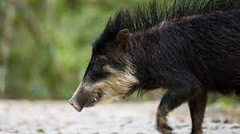

Peccaries:
Peccaries are usually medium-sized pig-like hoofed
mammals of the Tayassuidae family.
They are found throughout Central + South America, Trinidad (The Carribeans)
and in the North American southwest.
Fun Fact: A group of peccarries that travel and live together
is called a "squadron"

Source:
https://en.wikipedia.org/wiki/Peccary